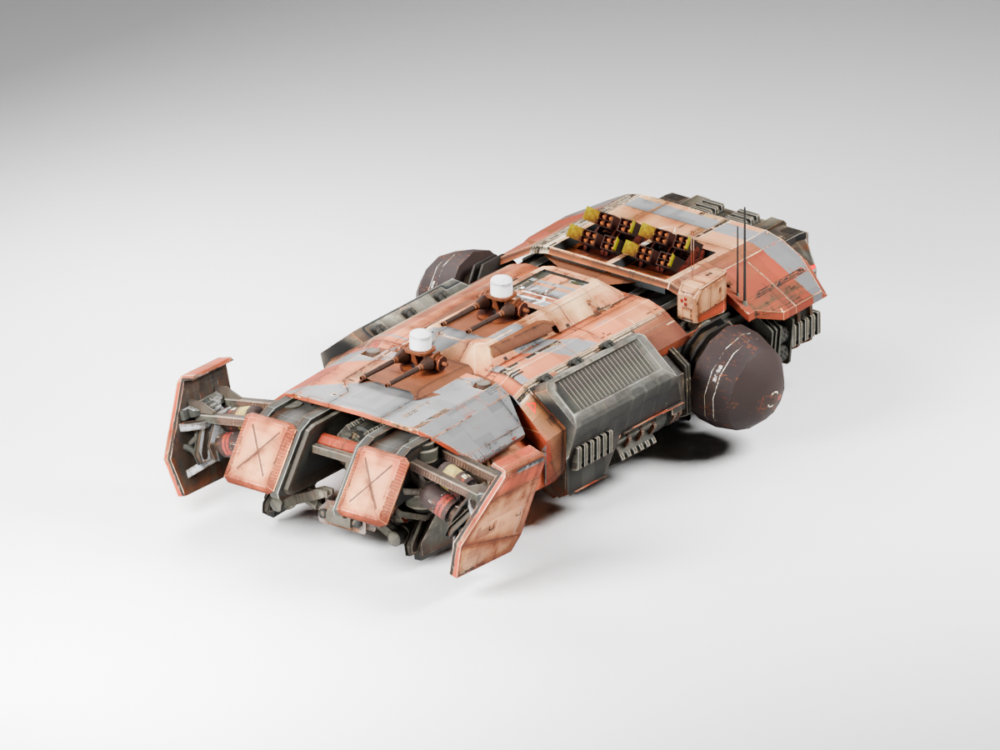
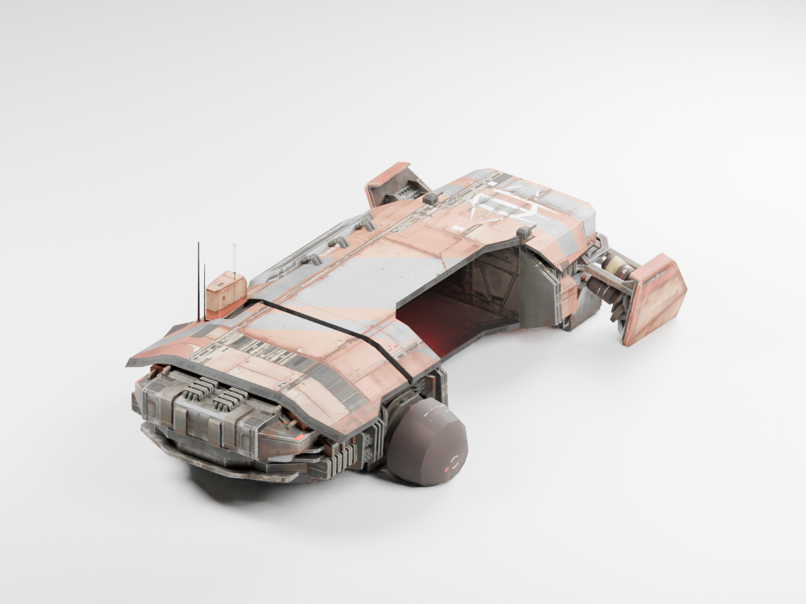
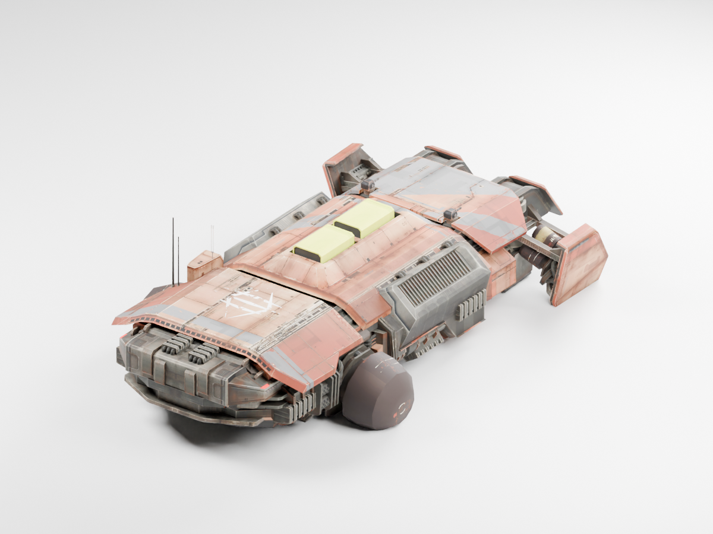
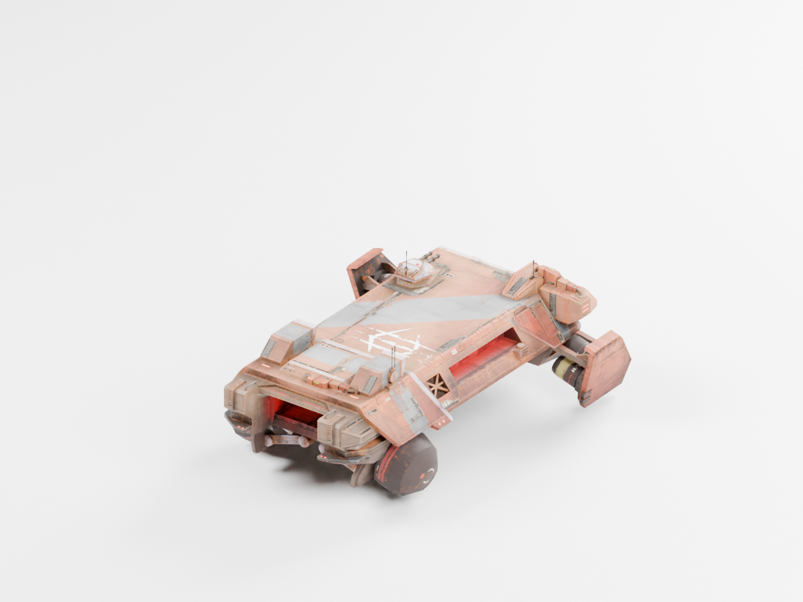

Wide armored jaw, rectangular hull, Khaaneph bridge and worn faction markings.


Production Cruiser · stepped plating and bridge

Siege Cruiser · cooling housings and armor

Baserunner · split jaw and service fittings
Original rig retained. Integrated into the DLL mod; native animation and shader-lifetime checks are recorded in the research guide.